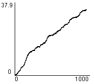
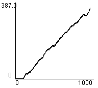

1. Editor
2. Simulator
3. Evaluation Tools
4. An Example Session
5. Algorithms
 a. Driving policies
a. Driving policies
 b. Traffic light controllers
b. Traffic light controllers
 1) Random
1) Random
 2) Most Cars
2) Most Cars
 3) RLD
3) RLD
 4) Hillclimbing
4) Hillclimbing
 5) Longest Queue
5) Longest Queue
 6) Relative LQ
6) Relative LQ
 7) Best first
7) Best first
 8) TC-1
8) TC-1
 9) TC-2
9) TC-2
 10) TC-3
10) TC-3
 11) TC-1++
11) TC-1++
 12) TC-2++
12) TC-2++
 13) TC-3++
13) TC-3++
 14) ACGJ-1
14) ACGJ-1
 15) ACGJ-2
15) ACGJ-2
 16) ACGJ-3
16) ACGJ-3
 17) GenNeural
17) GenNeural
Most Cars
Traffic lights will be set to the setting that will let the most cars pass. This might not mean the best setting, even for one junction, because junctions do not communicate, and road users on
linked lanes might not be able to proceed because the decision about that lane at the next traffic light is different.
Most Cars relieves the most clogged up lanes, but does not take into account how full lanes are in comparisson with others.
Example Performance Statistics |
|
| (Map: Simple) Average Junction Waiting Time |
 |
| (Map: Simple) Total Road Users Arrived |
|
| (Map: Simple) Average Trip Waiting Time |
|
| (Map: Simple) Total Waiting Queue Length |
| (Map: Complex) Average Junction Waiting Time |
 |
| (Map: Complex) Total Road Users Arrived |
|
| (Map: Complex) Average Trip Waiting Time |
|
| (Map: Complex) Total Waiting Queue Length |
 |